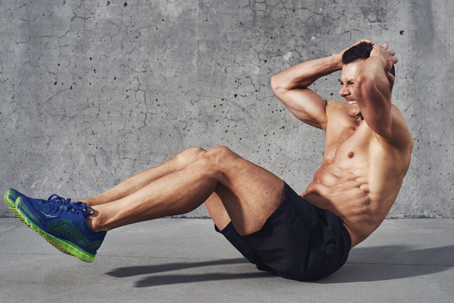

8 ideas de Prensa para piernas | prensa para piernas, equipos de gym, gimnasio en casa
Prensa para piernas
Colección de César Augusto
8 Pines • 11 seguidores Ejercicios Para Glúteos Ejercicios De Fitness Sesiones De Ejercicio Rutinas De Ejercicio Prensa Para Piernas Musculos De Las Piernas Tobillos Motivación Para Acondicionamiento Físico Entrenamiento Con PesasTeletrabajo – Todo lo que usted quería saber sobre el trabajo a distancia y no se atrevía a preguntar | Trabajar por Internet
Introducción Es muy común hoy en día escuchar los términos teletrabajo, trabajo a distancia, trabajar desde casa, trabajos por internet y otros similares. Sin embargo, no siempre se obtienen definiciones precisas acerca de dichas palabras y se produce una gran confusión. En este artículo intentaremos dar una definición precisa del teletrabajo para poder entender que es, las ventajas y desventajas que tiene, una breve historia del teletrabajo para conocer como se inició y como se fue…
Gimnasio Aparatos Aparatos De Gym Maquinas De Gimnasio Maquinas De Gym Ejercicios Musculacion Ejercicios Para Piernas Ejercicios De Fitness Banco De Gimnasio Gimnasio De Crossfit En CasaSISSY SQUAT
Sissy squat
Gimnasio Aparatos Aparatos De Gym Maquinas De Gimnasio Maquinas De Gym Aparatos Para Hacer Ejercicio Equipo Para Ejercicio Equipos De Gym Equipos De Gimnasia Equipo De Entrenamientofitness store
levantamiento pelvico para gluteo. excelente equipo para gimnasio, alto trafico con excelente garantia. somos fabricantes y distribuidores a nivel nacional.
Salas De Entrenamiento En Casa Gimnasio Aparatos Equipo De Entrenamiento Maquinas De Gimnasio Maquinas De Gym Entrenamiento Funcional Maquinas Fitness Prensa Para Piernas Gimnasio De Crossfit En CasaRowing dumbbells
Gimnasio Aparatos Aparatos De Gym Maquinas De Gimnasio Maquinas De Gym Equipo De Entrenamiento Entrenamiento Gimnasio Ejercicios De Entrenamiento Banco Gimnasio Gimnasio De Crossfit En CasaPrensa Para Piernas Gimnasio En Casa Rutinas Entrenamientos De Gimnasio Rutinas De Entrenamiento Ganar Músculo Sacar Músculos Entrenamiento De Sentadilla Garage Gym
Wishbone
Purmotion is the world leader in functional training equipment and training systems.
Prensa Para Piernas Equipo De Entrenamiento Equipo De Gimnasio Half Rack Diseño De Gimnasio En Casa Amor Duro Garage Gym Entrenamiento Funcional Desafío De 30 DíasWishbone
Purmotion is the world leader in functional training equipment and training systems.
Tips Bajar De Peso Como Bajar De Peso Perder Peso Bajar Peso Consejos Para La Salud Salud Y Ejercicio Buen Consejo Consejos Útiles Dieta Del LimonCódigos sagrados para bajar de peso fácilmente - WeMystic
Códigos Sagrados: Conoce cómo bajar de peso con los códigos sagrados
Privacidad